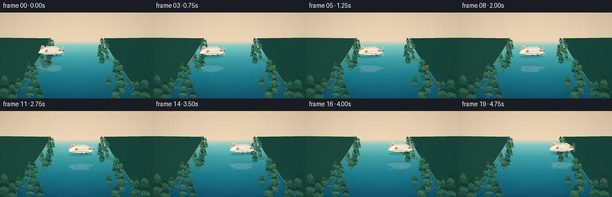
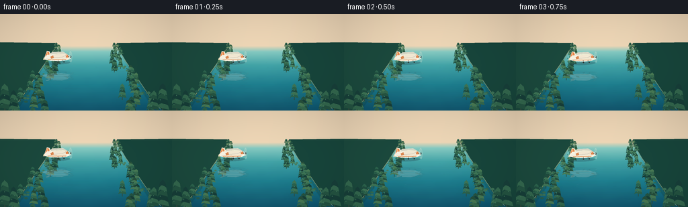
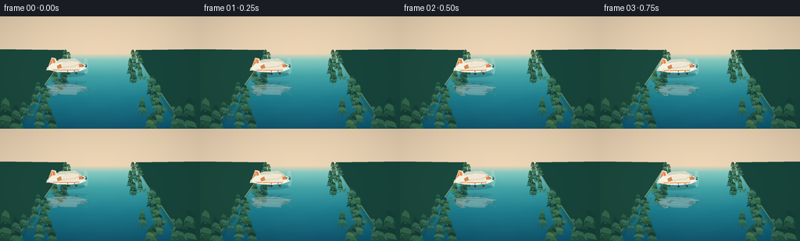
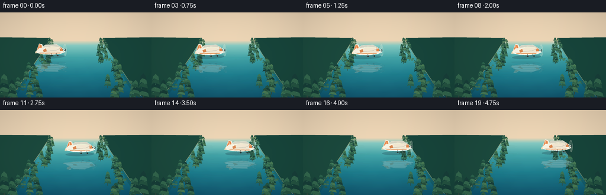
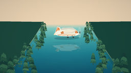
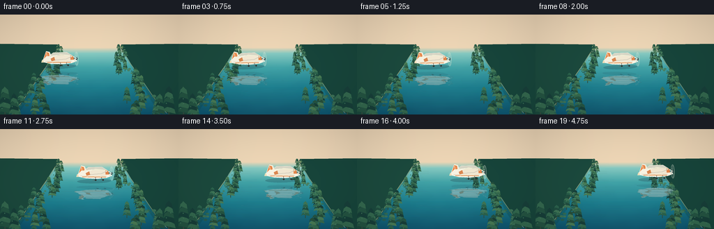

CODING AGENTS AS PIXEL WORLD MODELS
traex/DeepSeek-V4.1-Flash · phygen_058
点击播放 · 原生 RGB 像素
逐轮保存的候选
回放视频、检查图与代码变化。
每份候选均可单独播放。实际图片检查记录在下方工具轨迹中。
候选 01播放与检查图
点击播放 · 原生 RGB 像素

展开代码变化
--- 上一保存版本
+++ 本次保存版本
@@ -0,0 +1,478 @@
+from pathlib import Path
+
+import numpy as np
+from PIL import Image, ImageDraw, ImageFilter
+
+import artifact_io
+
+
+W, H, N, FPS = 256, 144, 20, 4.0
+S = 4
+WS, HS = W * S, H * S
+ROOT = Path(__file__).resolve().parent
+SEED = 5801
+
+
+def sc(value):
+ return int(round(value * S))
+
+
+def pts(points):
+ return [(sc(x), sc(y)) for x, y in points]
+
+
+def color(hex_value):
+ hex_value = hex_value.lstrip("#")
+ return tuple(int(hex_value[i : i + 2], 16) for i in (0, 2, 4))
+
+
+def vertical_gradient(width, height, stops):
+ """Build a smooth RGB vertical gradient from (position, color) stops."""
+ y = np.linspace(0.0, 1.0, height, dtype=np.float32)
+ positions = np.array([stop[0] for stop in stops], dtype=np.float32)
+ colors = np.array([stop[1] for stop in stops], dtype=np.float32)
+ out = np.empty((height, 3), dtype=np.float32)
+ for channel in range(3):
+ out[:, channel] = np.interp(y, positions, colors[:, channel])
+ return Image.fromarray(np.repeat(out[:, None, :], width, axis=1).astype(np.uint8))
+
+
+def add_cloud(draw, cx, cy, rx, ry, fill):
+ for ox, oy, sx, sy in [
+ (-0.52, 0.08, 0.55, 0.62),
+ (-0.10, -0.17, 0.66, 1.00),
+ (0.38, 0.04, 0.58, 0.70),
+ (0.05, 0.18, 0.95, 0.58),
+ ]:
+ draw.ellipse(
+ (sc(cx + ox * rx - sx * rx), sc(cy + oy * ry - sy * ry),
+ sc(cx + ox * rx + sx * rx), sc(cy + oy * ry + sy * ry)),
+ fill=fill,
+ )
+
+
+def make_sky(t):
+ sky = vertical_gradient(
+ WS,
+ HS,
+ [
+ (0.00, color("#5eabc4")),
+ (0.22, color("#8bcbd9")),
+ (0.42, color("#cce3d9")),
+ (0.53, color("#f2dcc0")),
+ (1.00, color("#eed9bd")),
+ ],
+ ).convert("RGBA")
+
+ glow = Image.new("RGBA", (WS, HS), (0, 0, 0, 0))
+ gd = ImageDraw.Draw(glow)
+ for radius, alpha in [(54, 10), (43, 14), (30, 18), (18, 24)]:
+ gd.ellipse(
+ (sc(218 - radius), sc(21 - radius * 0.52), sc(218 + radius), sc(21 + radius * 0.52)),
+ fill=(255, 241, 195, alpha),
+ )
+ glow = glow.filter(ImageFilter.GaussianBlur(sc(4)))
+ sky.alpha_composite(glow)
+
+ clouds = Image.new("RGBA", (WS, HS), (0, 0, 0, 0))
+ cd = ImageDraw.Draw(clouds)
+ drift = 1.2 * t / (N - 1)
+ add_cloud(cd, 52 + drift, 25, 29, 4.8, (249, 242, 222, 92))
+ add_cloud(cd, 111 + drift * 0.5, 17, 22, 3.4, (255, 250, 236, 64))
+ add_cloud(cd, 180 + drift, 34, 33, 4.0, (255, 245, 224, 84))
+ add_cloud(cd, 245 + drift * 0.6, 14, 26, 3.5, (255, 250, 237, 58))
+ clouds = clouds.filter(ImageFilter.GaussianBlur(sc(1.3)))
+ sky.alpha_composite(clouds)
+ return sky
+
+
+def make_mountains():
+ layer = Image.new("RGBA", (WS, HS), (0, 0, 0, 0))
+ draw = ImageDraw.Draw(layer)
+ far = [
+ (0, 47), (13, 42), (23, 44), (37, 36), (48, 43), (63, 38),
+ (78, 45), (92, 41), (108, 46), (124, 39), (141, 45), (157, 37),
+ (173, 43), (190, 39), (206, 46), (223, 41), (238, 45), (256, 39),
+ (256, 56), (0, 56),
+ ]
+ draw.polygon(pts(far), fill=(102, 143, 139, 235))
+ near = [
+ (0, 52), (18, 48), (33, 50), (48, 45), (61, 49), (77, 46),
+ (93, 51), (111, 47), (127, 50), (145, 45), (162, 50), (181, 47),
+ (199, 51), (216, 46), (233, 51), (247, 48), (256, 50),
+ (256, 58), (0, 58),
+ ]
+ draw.polygon(pts(near), fill=(57, 103, 91, 242))
+
+ haze = Image.new("RGBA", (WS, HS), (0, 0, 0, 0))
+ hd = ImageDraw.Draw(haze)
+ hd.rectangle((0, sc(43), WS, sc(57)), fill=(235, 218, 191, 22))
+ haze = haze.filter(ImageFilter.GaussianBlur(sc(2.5)))
+ layer.alpha_composite(haze)
+ return layer
+
+
+def make_water(t):
+ water = vertical_gradient(
+ WS,
+ HS,
+ [
+ (0.33, color("#e8d2b4")),
+ (0.39, color("#82c5be")),
+ (0.53, color("#3e9fa4")),
+ (0.73, color("#197b8d")),
+ (1.00, color("#0b526d")),
+ ],
+ ).convert("RGBA")
+ arr = np.asarray(water).astype(np.float32)
+ yy, xx = np.mgrid[0:HS, 0:WS]
+ yn = yy / HS
+ xn = xx / WS
+
+ phase = t * 0.55
+ broad = (
+ 0.011 * np.sin(xn * 24.0 + yn * 35.0 + phase)
+ + 0.007 * np.sin(xn * 53.0 - yn * 14.0 - phase * 1.4)
+ + 0.004 * np.sin(yn * 112.0 + phase * 2.0)
+ )
+ perspective = np.clip((yn - 0.36) / 0.64, 0, 1)
+ arr[:, :, 0] *= 1.0 + broad * perspective
+ arr[:, :, 1] *= 1.0 + broad * 0.72 * perspective
+ arr[:, :, 2] *= 1.0 + broad * 0.50 * perspective
+
+ # A soft reflected-sky column keeps the water bright and crystal clear.
+ river_center = 0.5 + 0.012 * np.sin(yn * 15.0)
+ center_glow = np.exp(-((xn - river_center) / 0.34) ** 2) * (0.07 + 0.10 * perspective)
+ arr[:, :, 0] += center_glow * 45
+ arr[:, :, 1] += center_glow * 38
+ arr[:, :, 2] += center_glow * 21
+
+ water = Image.fromarray(np.clip(arr, 0, 255).astype(np.uint8), "RGBA")
+ lines = Image.new("RGBA", (WS, HS), (0, 0, 0, 0))
+ draw = ImageDraw.Draw(lines)
+ rng = np.random.default_rng(SEED)
+ for i in range(52):
+ y = 57 + 84 * (i / 51.0) ** 1.65
+ x0 = rng.uniform(18, 106)
+ length = rng.uniform(12, 45) * (0.5 + (y - 56) / 88)
+ alpha = int(rng.uniform(14, 31))
+ wave = 0.8 * np.sin(i * 1.7 + phase)
+ draw.line(
+ pts([(x0 + wave, y), (x0 + length + wave, y + rng.uniform(-0.35, 0.35))]),
+ fill=(235, 250, 238, alpha),
+ width=max(1, sc(0.22 + 0.15 * (y - 55) / 90)),
+ )
+ lines = lines.filter(ImageFilter.GaussianBlur(sc(0.35)))
+ water.alpha_composite(lines)
+ return water
+
+
+def draw_tree(draw, x, base_y, height, width, palette, lean=0.0):
+ trunk = color("#314c3e")
+ draw.line(
+ pts([(x, base_y), (x + lean * width, base_y - height * 0.72)]),
+ fill=trunk,
+ width=max(2, sc(width * 0.08)),
+ )
+ rng = np.random.default_rng(int(SEED + x * 31 + base_y * 7 + height * 13))
+ for i in range(5):
+ yy = base_y - height * (0.22 + i * 0.15)
+ half = width * (0.47 - i * 0.055)
+ col = palette[(i + int(x)) % len(palette)]
+ draw.polygon(
+ pts([
+ (x - half * 0.55, yy + height * 0.04),
+ (x - half, yy + height * 0.10),
+ (x - half * 0.78, yy - height * 0.03),
+ (x - half * 0.30, yy - height * 0.08),
+ (x + lean * width, yy - height * 0.12),
+ (x + half * 0.36, yy - height * 0.07),
+ (x + half * 0.82, yy - height * 0.02),
+ (x + half, yy + height * 0.11),
+ ]),
+ fill=col,
+ )
+ if i < 3:
+ sparkle_x = x + rng.uniform(-half * 0.5, half * 0.45)
+ draw.ellipse(
+ (sc(sparkle_x - 0.7), sc(yy - height * 0.05 - 0.7),
+ sc(sparkle_x + 0.7), sc(yy - height * 0.05 + 0.7)),
+ fill=(92, 135, 78, 150),
+ )
+
+
+def make_banks():
+ layer = Image.new("RGBA", (WS, HS), (0, 0, 0, 0))
+ draw = ImageDraw.Draw(layer)
+ left = [
+ (0, 42), (82, 43), (83, 48), (80, 53), (76, 58), (72, 64),
+ (68, 71), (61, 81), (54, 92), (46, 104), (37, 119), (25, 134),
+ (13, 144), (0, 144),
+ ]
+ right = [(256 - x, y) for x, y in left]
+ draw.polygon(pts(left), fill=(27, 73, 61, 255))
+ draw.polygon(pts(right), fill=(23, 69, 59, 255))
+
+ # Thin warm shoreline catches the low sunlight.
+ draw.line(
+ pts([(83, 47), (80, 53), (76, 59), (71, 68), (63, 79), (54, 92),
+ (44, 107), (31, 126), (17, 142)]),
+ fill=(170, 167, 114, 190),
+ width=sc(0.8),
+ )
+ draw.line(
+ pts([(173, 47), (176, 53), (180, 59), (185, 68), (193, 79), (202, 92),
+ (212, 107), (225, 126), (239, 142)]),
+ fill=(161, 165, 116, 165),
+ width=sc(0.8),
+ )
+
+ palettes = [
+ [color("#204d3f"), color("#2b624c"), color("#3d7455")],
+ [color("#173f39"), color("#245442"), color("#33684e")],
+ [color("#264f3b"), color("#35694d"), color("#487a54")],
+ ]
+ rng = np.random.default_rng(SEED + 91)
+ for side in (-1, 1):
+ for i in range(28):
+ depth = i / 27.0
+ y = 44 + 100 * depth ** 1.42
+ edge = 82 - 72 * depth ** 1.25 if side < 0 else 174 + 72 * depth ** 1.25
+ x = edge - side * rng.uniform(0, 12 + 42 * depth)
+ height = 6 + 22 * depth + rng.uniform(-2, 4)
+ width = 5 + 11 * depth + rng.uniform(-1.2, 2.2)
+ draw_tree(
+ draw,
+ x,
+ y + height * 0.72,
+ height,
+ width,
+ palettes[(i + (side > 0)) % len(palettes)],
+ lean=side * 0.03,
+ )
+
+ # Moss and undergrowth soften the otherwise geometric shore.
+ for side in (-1, 1):
+ for i in range(42):
+ depth = rng.random()
+ y = 46 + 96 * depth
+ edge = 83 - 72 * depth ** 1.25 if side < 0 else 173 + 72 * depth ** 1.25
+ x = edge - side * rng.uniform(0, 4 + 20 * depth)
+ r = rng.uniform(0.45, 1.35 + 2.4 * depth)
+ shade = rng.integers(0, 3)
+ fill = [(57, 107, 70, 190), (77, 119, 74, 175), (45, 91, 66, 180)][shade]
+ draw.ellipse((sc(x - r), sc(y - r * 0.6), sc(x + r), sc(y + r * 0.6)), fill=fill)
+
+ # Near-camera tree masses anchor both foreground corners.
+ for x, base, height, width in [
+ (7, 148, 47, 22), (20, 148, 37, 16), (242, 148, 48, 21), (229, 147, 35, 16)
+ ]:
+ draw_tree(draw, x, base, height, width, palettes[1], lean=-0.02 if x < 128 else 0.02)
+
+ layer = layer.filter(ImageFilter.GaussianBlur(sc(0.12)))
+ return layer
+
+
+def make_bank_reflections():
+ layer = Image.new("RGBA", (WS, HS), (0, 0, 0, 0))
+ draw = ImageDraw.Draw(layer)
+ left = [(0, 50), (82, 50), (75, 61), (65, 77), (54, 96), (40, 122), (24, 144), (0, 144)]
+ right = [(256 - x, y) for x, y in left]
+ draw.polygon(pts(left), fill=(22, 72, 65, 84))
+ draw.polygon(pts(right), fill=(20, 68, 65, 84))
+ for i in range(28):
+ y = 55 + i * 3.1
+ alpha = max(10, 58 - i)
+ xl = 77 - i * 1.8
+ xr = 179 + i * 1.8
+ draw.line(pts([(0, y), (max(0, xl), y + 0.5)]), fill=(44, 109, 84, alpha), width=sc(0.6))
+ draw.line(pts([(min(255, xr), y + 0.5), (256, y)]), fill=(37, 105, 85, alpha), width=sc(0.6))
+ return layer.filter(ImageFilter.GaussianBlur(sc(0.8)))
+
+
+def draw_plane_art(angle_deg, detail=True):
+ # Local canvas: nose points right, and the aircraft occupies roughly 48 x 26 units.
+ lw, lh = sc(62), sc(38)
+ layer = Image.new("RGBA", (lw, lh), (0, 0, 0, 0))
+ d = ImageDraw.Draw(layer)
+ cx, cy = 31, 19
+
+ def local(points):
+ return [(sc(cx + x), sc(cy + y)) for x, y in points]
+
+ # Soft contact shadow below the airframe.
+ d.ellipse((sc(cx - 20), sc(cy + 6), sc(cx + 19), sc(cy + 11)), fill=(20, 48, 58, 60))
+
+ # Far wing and horizontal stabilizer.
+ d.polygon(local([(-17, -1), (-7, -8), (9, -8), (15, -4), (9, -2), (-8, -2)]),
+ fill=color("#d4d3c3"))
+ d.polygon(local([(-20, 0), (-13, -1), (-13, 3), (-21, 3)]), fill=color("#e8d8b4"))
+
+ # Tail fin.
+ d.polygon(local([(-19, 0), (-15, -10), (-11, -9), (-8, -1)]), fill=color("#f2ead8"))
+ d.polygon(local([(-18, -1), (-15, -9), (-12, -8), (-11, -2)]), fill=color("#e5894c"))
+ d.line(local([(-15, -8), (-14, -3)]), fill=color("#fff5df"), width=sc(0.55))
+
+ # Fuselage.
+ body = [
+ (-19, 0), (-15, -4), (-4, -5), (8, -5), (16, -3), (21, 0),
+ (20, 3), (14, 5), (3, 6), (-10, 5), (-18, 3)
+ ]
+ d.polygon(local(body), fill=color("#f4efdf"))
+ d.line(local([(-16, 2), (14, 3)]), fill=color("#d7cfb9"), width=sc(0.7))
+ d.line(local([(-14, 3), (13, 4)]), fill=color("#df8c4d"), width=sc(0.9))
+ d.polygon(local([(12, -3), (18, -1), (17, 1), (10, 0)]), fill=color("#2e7880"))
+ d.line(local([(12, -2), (16, -1)]), fill=(211, 244, 235, 210), width=sc(0.35))
+
+ # Near wing: broad enough to read immediately at video scale.
+ wing = [(-10, -1), (1, -6), (15, -4), (17, 1), (7, 3), (-9, 3)]
+ d.polygon(local(wing), fill=color("#eee4cf"))
+ d.line(local([(-9, 1), (8, 0), (15, -3)]), fill=color("#c8c4b6"), width=sc(0.65))
+ d.polygon(local([(13, -4), (16, -3), (17, 1), (13, 1)]), fill=color("#de854d"))
+ d.polygon(local([(-10, -1), (-6, -3), (-5, 1), (-9, 2)]), fill=color("#d78751"))
+
+ # Small landing gear and window glint.
+ d.line(local([(1, 4), (1, 7), (-2, 8)]), fill=color("#555b55"), width=sc(0.45))
+ d.line(local([(8, 4), (8, 7), (10, 8)]), fill=color("#555b55"), width=sc(0.45))
+ d.ellipse((sc(cx + 0.3), sc(cy + 6.5), sc(cx + 2.2), sc(cy + 8.2)), fill=color("#2c3432"))
+ d.ellipse((sc(cx + 9.0), sc(cy + 6.6), sc(cx + 10.8), sc(cy + 8.2)), fill=color("#2c3432"))
+ if detail:
+ d.ellipse((sc(cx + 13.3), sc(cy - 3.1), sc(cx + 14.4), sc(cy - 2.0)),
+ fill=(244, 255, 247, 210))
+
+ # Propeller disc and spinner.
+ d.ellipse((sc(cx + 18.0), sc(cy - 8.0), sc(cx + 22.0), sc(cy + 8.0)),
+ outline=(221, 223, 207, 145), width=sc(0.55))
+ d.line(local([(20, -7), (20, 7)]), fill=(237, 238, 221, 125), width=sc(0.45))
+ d.line(local([(19, -4), (21, 4)]), fill=(255, 255, 242, 105), width=sc(0.35))
+ d.ellipse((sc(cx + 18.9), sc(cy - 1.4), sc(cx + 21.1), sc(cy + 1.4)),
+ fill=color("#3a4d4b"))
+ d.ellipse((sc(cx + 19.2), sc(cy - 0.9), sc(cx + 20.1), sc(cy + 0.2)),
+ fill=(222, 235, 222, 220))
+
+ # Fine warm rim light on the upper fuselage.
+ d.line(local([(-13, -3.7), (-2, -4.8), (8, -4.7), (16, -2.8)]),
+ fill=(255, 249, 219, 210), width=sc(0.48))
+
+ return layer.rotate(angle_deg, resample=Image.Resampling.BICUBIC, expand=True)
+
+
+def paste_centered(dst, layer, cx, cy):
+ x = int(round(cx * S - layer.width / 2))
+ y = int(round(cy * S - layer.height / 2))
+ dst.alpha_composite(layer, (x, y))
+
+
+def make_reflection(plane_layer, cx, cy, t):
+ flipped = plane_layer.transpose(Image.Transpose.FLIP_TOP_BOTTOM)
+ arr = np.asarray(flipped).copy()
+ alpha = arr[:, :, 3].astype(np.float32)
+ tint = np.array([63, 147, 164], dtype=np.float32)
+ rgb = arr[:, :, :3].astype(np.float32)
+ arr[:, :, :3] = np.clip(rgb * 0.42 + tint * 0.58, 0, 255).astype(np.uint8)
+ arr[:, :, 3] = np.clip(alpha * 0.47, 0, 255).astype(np.uint8)
+ flipped = Image.fromarray(arr, "RGBA")
+
+ # Compress vertically and ripple each scanline to make the water reflection read.
+ target_h = max(1, int(flipped.height * 0.78))
+ flipped = flipped.resize((flipped.width, target_h), Image.Resampling.BICUBIC)
+ src = np.asarray(flipped)
+ warped = np.zeros_like(src)
+ phase = t * 0.48
+ for y in range(src.shape[0]):
+ shift = int(round(
+ (2.3 * np.sin(y * 0.18 + phase) + 1.15 * np.sin(y * 0.49 - phase * 1.7)) * S
+ ))
+ if shift >= 0:
+ warped[y, shift:] = src[y, : src.shape[1] - shift]
+ else:
+ warped[y, :shift] = src[y, -shift:]
+ warped[:, :, 3] = (warped[:, :, 3] * (0.86 + 0.14 * np.sin(
+ np.arange(src.shape[0])[:, None] * 0.45 + phase * 2.1
+ ))).astype(np.uint8)
+ reflection = Image.fromarray(warped, "RGBA").filter(ImageFilter.GaussianBlur(sc(0.30)))
+ return reflection
+
+
+def composite_reflection(canvas, reflection, cx, cy, t):
+ # Reflection plane sits below the aircraft, as though seen through clear water.
+ target_y = cy + 28.5
+ x = int(round(cx * S - reflection.width / 2))
+ y = int(round(target_y * S - reflection.height / 2))
+ canvas.alpha_composite(reflection, (x, y))
+
+ # Broken glints along the reflection make the mirror image feel aqueous.
+ glints = Image.new("RGBA", (WS, HS), (0, 0, 0, 0))
+ gd = ImageDraw.Draw(glints)
+ rng = np.random.default_rng(SEED + 220)
+ for i in range(9):
+ gy = target_y - 7 + i * 1.9
+ gx = cx + rng.uniform(-15, 15)
+ glen = rng.uniform(2.5, 8.0)
+ gd.line(
+ pts([(gx, gy), (gx + glen, gy + 0.15 * np.sin(t + i))]),
+ fill=(230, 249, 236, int(35 + 16 * np.sin(t * 0.7 + i))),
+ width=sc(0.35),
+ )
+ canvas.alpha_composite(glints.filter(ImageFilter.GaussianBlur(sc(0.35))))
+
+
+def make_foreground_glints(t):
+ layer = Image.new("RGBA", (WS, HS), (0, 0, 0, 0))
+ draw = ImageDraw.Draw(layer)
+ rng = np.random.default_rng(SEED + 404)
+ for i in range(24):
+ y = rng.uniform(70, 141)
+ x = rng.uniform(30, 226)
+ length = rng.uniform(2, 11) * (0.5 + (y - 65) / 90)
+ alpha = int(rng.uniform(16, 39))
+ bob = 0.7 * np.sin(t * 0.6 + i)
+ draw.line(pts([(x + bob, y), (x + length + bob, y)]),
+ fill=(217, 249, 241, alpha), width=sc(0.25))
+ return layer.filter(ImageFilter.GaussianBlur(sc(0.22)))
+
+
+def render_frame(t):
+ frame = make_sky(t)
+ frame.alpha_composite(make_mountains())
+ frame.alpha_composite(make_water(t))
+ frame.alpha_composite(make_bank_reflections())
+ frame.alpha_composite(make_banks())
+
+ progress = t / (N - 1)
+ cx = 85 + 87 * progress
+ cy = 64.2 + 1.4 * np.sin(progress * np.pi * 1.4) - 1.2 * progress
+ angle = 2.1 - 0.5 * progress + 0.55 * np.sin(progress * np.pi * 2.2)
+
+ plane = draw_plane_art(angle)
+ reflection = make_reflection(plane, cx, cy, t)
+ composite_reflection(frame, reflection, cx, cy, t)
+ paste_centered(frame, plane, cx, cy)
+
+ frame.alpha_composite(make_foreground_glints(t))
+
+ # Gentle cinematic grade: warm highlights, cool shadows, subtle vignette.
+ arr = np.asarray(frame.convert("RGB")).astype(np.float32) / 255.0
+ yy, xx = np.mgrid[0:HS, 0:WS]
+ vignette = 1.0 - 0.12 * (((xx / WS - 0.5) / 0.7) ** 2 + ((yy / HS - 0.53) / 0.72) ** 2)
+ arr *= np.clip(vignette[:, :, None], 0.82, 1.0)
+ arr = np.clip(arr, 0, 1)
+ arr = np.where(arr > 0.55, arr + (arr - 0.55) * 0.04, arr)
+ arr = np.clip(arr, 0, 1)
+
+ small = Image.fromarray((arr * 255).round().astype(np.uint8)).resize(
+ (W, H), Image.Resampling.LANCZOS
+ )
+ return np.asarray(small, dtype=np.uint8)
+
+
+def main():
+ frames = np.stack([render_frame(t) for t in range(N)], axis=0)
+ assert frames.shape == (N, H, W, 3)
+ assert frames.dtype == np.uint8
+ artifact_io.save(frames, ROOT)
+ print(f"Saved {len(frames)} frames to {ROOT}")
+
+
+if __name__ == "__main__":
+ main()
候选 02播放与检查图
点击播放 · 原生 RGB 像素


展开代码变化
--- 上一保存版本
+++ 本次保存版本
@@ -354,7 +354,11 @@
d.line(local([(-13, -3.7), (-2, -4.8), (8, -4.7), (16, -2.8)]),
fill=(255, 249, 219, 210), width=sc(0.48))
- return layer.rotate(angle_deg, resample=Image.Resampling.BICUBIC, expand=True)
+ layer = layer.rotate(angle_deg, resample=Image.Resampling.BICUBIC, expand=True)
+ return layer.resize(
+ (int(layer.width * 1.24), int(layer.height * 1.24)),
+ Image.Resampling.LANCZOS,
+ )
def paste_centered(dst, layer, cx, cy):
@@ -370,7 +374,7 @@
tint = np.array([63, 147, 164], dtype=np.float32)
rgb = arr[:, :, :3].astype(np.float32)
arr[:, :, :3] = np.clip(rgb * 0.42 + tint * 0.58, 0, 255).astype(np.uint8)
- arr[:, :, 3] = np.clip(alpha * 0.47, 0, 255).astype(np.uint8)
+ arr[:, :, 3] = np.clip(alpha * 0.58, 0, 255).astype(np.uint8)
flipped = Image.fromarray(arr, "RGBA")
# Compress vertically and ripple each scanline to make the water reflection read.
候选 03播放与检查图

候选 04播放与检查图
点击播放 · 原生 RGB 像素


展开代码变化
--- 上一保存版本
+++ 本次保存版本
@@ -371,10 +371,10 @@
flipped = plane_layer.transpose(Image.Transpose.FLIP_TOP_BOTTOM)
arr = np.asarray(flipped).copy()
alpha = arr[:, :, 3].astype(np.float32)
- tint = np.array([63, 147, 164], dtype=np.float32)
+ tint = np.array([47, 126, 148], dtype=np.float32)
rgb = arr[:, :, :3].astype(np.float32)
- arr[:, :, :3] = np.clip(rgb * 0.42 + tint * 0.58, 0, 255).astype(np.uint8)
- arr[:, :, 3] = np.clip(alpha * 0.58, 0, 255).astype(np.uint8)
+ arr[:, :, :3] = np.clip(rgb * 0.52 + tint * 0.48, 0, 255).astype(np.uint8)
+ arr[:, :, 3] = np.clip(alpha * 0.72, 0, 255).astype(np.uint8)
flipped = Image.fromarray(arr, "RGBA")
# Compress vertically and ripple each scanline to make the water reflection read.
@@ -391,7 +391,7 @@
warped[y, shift:] = src[y, : src.shape[1] - shift]
else:
warped[y, :shift] = src[y, -shift:]
- warped[:, :, 3] = (warped[:, :, 3] * (0.86 + 0.14 * np.sin(
+ warped[:, :, 3] = (warped[:, :, 3] * (0.91 + 0.09 * np.sin(
np.arange(src.shape[0])[:, None] * 0.45 + phase * 2.1
))).astype(np.uint8)
reflection = Image.fromarray(warped, "RGBA").filter(ImageFilter.GaussianBlur(sc(0.30)))
可观测工具轨迹
实际执行的命令与返回图片。
命令 1exit 0
/bin/bash -c "pwd && rg --files -g '"'!*__pycache__*'"' -g '"'!*.pyc'"' | sed -n '1,120p'"
命令 2exit 0
/bin/bash -c "sed -n '1,240p' prompt.txt"
命令 3exit 0
/bin/bash -c "sed -n '1,280p' GENERATION_RULES.md"
命令 4exit 0
/bin/bash -c 'cat task_spec.json'
命令 5exit 0
/bin/bash -c "find . -maxdepth 3 -type f -printf '%p %s bytes\\n' | sort | sed -n '1,160p'"
命令 6exit 0
/bin/bash -c "sed -n '1,260p' artifact_io.py"
命令 7exit 0
/bin/bash -c "sed -n '1,220p' player_template.html"
命令 8exit 0
/bin/bash -c "python - <<'PY' import importlib.util for m in ['numpy','PIL','imageio','cv2','scipy','matplotlib']: print(m, bool(importlib.util.find_spec(m))) PY"
命令 9exit 1
/bin/bash -c 'python generate.py'
命令 10exit 0
/bin/bash -c 'python generate.py'
命令 11exit 0
/bin/bash -c 'python generate.py'
命令 12exit 0
/bin/bash -c 'python generate.py'
命令 13exit 1
/bin/bash -c "python - <<'PY'
from pathlib import Path
import json
import numpy as np
from PIL import Image
root=Path('.')
spec=json.loads((root/'task_spec.json').read_text())
z=np.load(root/'pixels.npz')['pixels']
frames=sorted((root/'frames').glob('*.png'))
imgs=np.stack([np.asarray(Image.open(p).convert('RGB')) for p in frames])
print('spec', spec)
print('pixels', z.shape, z.dtype, 'range', int(z.min()), int(z.max()))
print('pngs', len(frames), imgs.shape, imgs.dtype)
print('first_last_mean_abs_diff', float(np.mean(np.abs(imgs[-1].astype(int)-imgs[0].astype(int)))))
print('consecutive_mean_abs_diff', float(np.mean([np.mean(np.abs(imgs[i].astype(int)-imgs[i-1].astype(int))) for i in range(1,len(imgs))])))
print('index_html_bytes', (root/'index.html').stat().st_size)
print('inspection', Image.open(root/'inspection.png').size)
print('transition', Image.open(root/'transition_check.png').size)
assert z.shape==(20,144,256) and z.dtype==np.uint32
assert len(frames)==20 and imgs.shape==(20,144,256,3)
assert float(np.mean(np.abs(imgs[-1].astype(int)-imgs[0].astype(int)))) > 0.5
print('contract checks: PASS')
PY"命令 14exit 0
/bin/bash -c "python - <<'PY'
from pathlib import Path
import json, re, base64
import numpy as np
from PIL import Image
root=Path('.')
spec=json.loads((root/'task_spec.json').read_text())
z=np.load(root/'pixels.npz')['pixels']
files=sorted((root/'frames').glob('*.png'))
imgs=np.stack([np.asarray(Image.open(p).convert('RGB')) for p in files])
packed=(imgs[:,:,:,0].astype(np.uint32)<<16)|(imgs[:,:,:,1].astype(np.uint32)<<8)|imgs[:,:,:,2].astype(np.uint32)
expected=packed.transpose(1,2,0)
assert z.shape==(spec['height'],spec['width'],spec['frames'])
assert np.array_equal(z, expected)
html=(root/'index.html').read_text()
match=re.search(r\"const DATA=(\\{.*?\\}),W=\", html)
assert match
payload=json.loads(match.group(1))
first=np.frombuffer(base64.b64decode(payload['first']),dtype='<u4').reshape(spec['height'],spec['width'])
assert np.array_equal(first, expected[:,:,0])
for i, encoded in enumerate(payload['deltas'], start=1):
raw=np.frombuffer(base64.b64decode(encoded),dtype='<u4')
cur=first.copy()
j=0
while j<len(raw):
start=int(raw[j]); count=int(raw[j+1]); cur.reshape(-1)[start:start+count]=raw[j+2:j+2+count]; j+=count+2
assert np.array_equal(cur, expected[:,:,i]), i
first=cur
print('spec', spec)
print('packed_tensor', z.shape, z.dtype)
print('png_frames', imgs.shape, imgs.dtype, 'count', len(files))
print('player_payload', payload['frames'], payload['fps'], payload['width'], payload['height'], 'deltas', len(payload['deltas']))
print('frame_mean_abs_motion', round(float(np.mean([np.mean(np.abs(imgs[i].astype(int)-imgs[i-1].astype(int))) for i in range(1,len(imgs))])),3))
print('all contract and payload checks: PASS')
PY"命令 15exit 0
/bin/bash -c 'git status --short 2>/dev/null || true; ls -lh generate.py pixels.npz index.html inspection.png frames/00.png frames/19.png'
视觉工具实际返回图片 1

视觉工具实际返回图片 2

视觉工具实际返回图片 3

视觉工具实际返回图片 4

保存候选 4 份；完成命令 15 次；可验证图片返回 4 张。原始 API 响应与完整日志保留在本地。